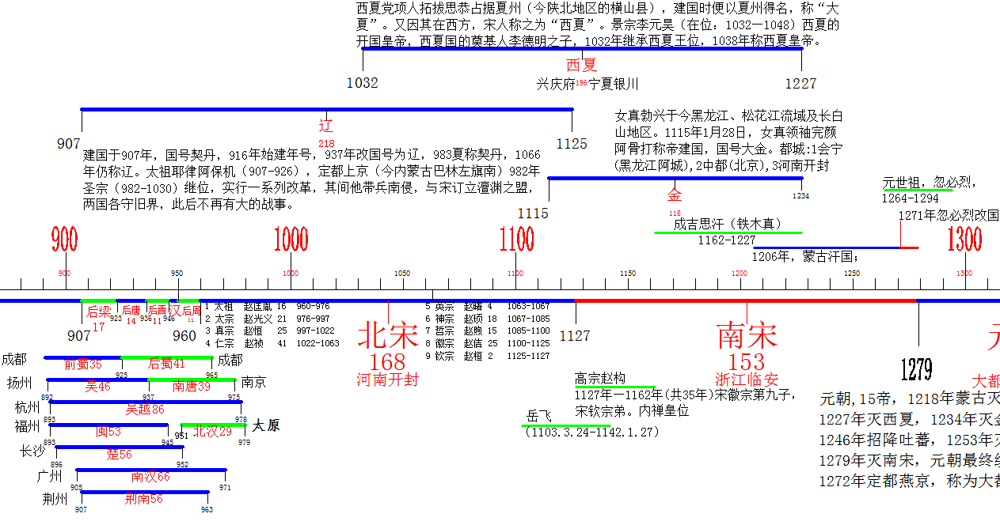
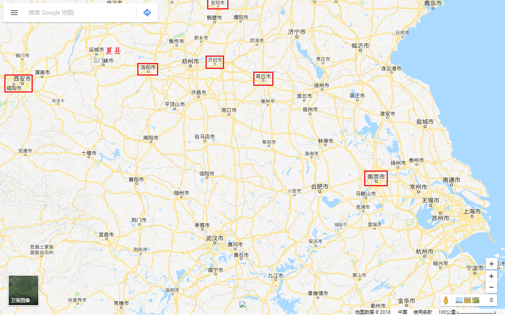

| 朝 代 | 起 讫 | 都 城 | 今 地 | 年份 | ||
|---|---|---|---|---|---|---|
| 夏 | 约前2470-前1600 | 安邑 | 山西夏县 | 471 | ||
| 商① | 约前1600-前1046 | 亳 | 河南商丘 | 554 | 约公元前14世纪盘庚迁都于殷，此后商也成为殷。 | |
| 殷 | 河南安阳 | |||||
| 周 | 西周② | 约前1046-前771 | 镐京 | 陕西西安 | 275 | 公元前841年(西周共和元年)为中国历史确切纪年的开始。 |
| 东周 | 前770-前256 | 洛邑 | 河南洛阳 | 514 | 东周的前半期，诸侯争相称霸，称为春秋时代；公元前453年，韩赵魏三家联手灭智氏家族后，三家分晋，各诸侯相互征伐，称为战国时代。 | |
| 秦 | 前221-前207 | 咸阳 | 陕西咸阳 | 14 | ||
| 汉 | 西汉③ | 前206—公元25 | 长安 | 陕西西安 | 231 | 包括王莽建立的“新”王朝(公元8-23年)。 |
| 东汉 | 25—220 | 洛阳 | 河南洛阳 | 195 | ||
| 三国 | 魏 | 220-265 | 洛阳 | 河南洛阳 | 45 | |
| 蜀 | 221-263 | 成都 | 四川成都 | 42 | ||
| 吴 | 222-280 | 建业 | 江苏南京 | 58 | ||
| 西晋 | 265-317 | 洛阳 | 河南洛阳 | 52 | ||
| 东晋 十六国 |
东晋 | 317-420 | 建康 | 江苏南京 | 103 | |
| 十六国④ | 304-439 | — | — | 135 | 五胡十六国:西晋末年，五个北方民族建立的政权。五胡指匈奴、鲜卑、羯、氐、羌，十六国有五凉四燕、三秦二赵、一成一夏。此外，还有代国、冉魏、西燕、吐谷浑等都在十六国之外。 | |
| 南朝 | 宋 | 420-479 | 建康 | 江苏南京 | 59 | |
| 齐 | 479-502 | 建康 | 江苏南京 | 23 | ||
| 梁 | 502-557 | 建康 | 江苏南京 | 55 | ||
| 陈 | 557-589 | 建康 | 江苏南京 | 32 | ||
| 北朝 | 北魏 | 386-534 | 平城 | 山西大同 | 148 | |
| 洛阳 | 河南洛阳 | |||||
| 东魏 | 534-550 | 邺 | 河北临漳 | 16 | ||
| 北齐 | 550-577 | 邺 | 河北临漳 | 27 | ||
| 西魏 | 535-557 | 长安 | 陕西西安 | 22 | ||
| 北周 | 557-581 | 长安 | 陕西西安 | 24 | ||
| 隋 | 581-618 | 大兴 | 陕西西安 | 37 | ||
| 唐 | 618-907 | 长安 | 陕西西安 | 289 | ||
| 五代 十国 |
后梁 | 907-923 | 汴 | 河南开封 | 16 | |
| 后唐 | 923-936 | 洛阳 | 河南洛阳 | 13 | ||
| 后晋 | 936-946 | 汴 | 河南开封 | 10 | ||
| 后汉 | 947-950 | 汴 | 河南开封 | 3 | ||
| 后周 | 951-960 | 汴 | 河南开封 | 9 | ||
| 十国⑤ | 902-979 | — | — | 77 | ||
| 宋 | 北宋 | 960-1127 | 开封 | 河南开封 | 167 | |
| 南宋 | 1127-1279 | 临安 | 浙江临安 | 152 | ||
| 辽 | 907-1125 | 皇都 (上京) |
辽宁 巴林右旗 |
218 | ||
| 西夏 | 1038-1227 | 兴庆府 | 宁夏银川 | 189 | ||
| 金 | 1115-1234 | 会宁 | 阿城(黑龙江) | 119 | ||
| 中都 | 北京 | |||||
| 开封 | 河南开封 | |||||
| 元 | 1206-1368 | 大都 | 北京 | 162 | ||
| 明 | 1368-1644 | 北京 | 北京 | 276 | ||
| 清 | 1616-1911 | 北京 | 北京 | 295 | ||
| 中华民国 | 1912-1949 | 南京 | 江苏南京 | |||
| 中华人民共和国1949年10月1日成立，首都北京。 | ||||||
附注：
① 约公元前14世纪盘庚迁都于殷，此后商也成为殷。
② 公元前841年(西周共和元年)为中国历史确切纪年的开始。
③ 包括王莽建立的“新”王朝(公元8年—23年)。王莽时期，爆发大规模的农民起义，建立了农民政权。公元23年，新王莽政权灭亡。公元25年，东汉王朝建立。
④ 这时期，在我国北方，先后存在过一些封建政权，其中有：汉(前赵)、成(成汉)、前凉、后赵(魏)、前燕、前秦、后燕、后秦、西秦、后凉、南凉、北凉、南燕、西凉、北燕、夏等国，历史上叫做“五胡十六国”。
⑤ 这时期，除后梁、后唐、后晋、后汉、后周外，还先后存在过一些封建政权，其中有：吴、前蜀、吴越、楚、闽、南汉、荆南(南平)、后蜀、南唐、北汉等国，历史上叫做“十国”。
五胡十六国南北朝↓

五代十国↓
都城
| 朝 代 | 起 讫 | 都 城 | 今 地 | 年份 | ||
| 夏 | 约前2470-前1600 | 安邑 | 山西夏县 | 471 | ||
| 周 | 西周 | 约前1046-前771 | 镐京 | 陕西西安 | 275 | |
| 汉 | 西汉 | 前206—公元25 | 长安 | 陕西西安 | 231 | |
| 西魏 | 535-557 | 长安 | 陕西西安 | 22 | ||
| 北周 | 557-581 | 长安 | 陕西西安 | 24 | ||
| 隋 | 581-618 | 大兴 | 陕西西安 | 37 | ||
| 唐 | 618-907 | 长安 | 陕西西安 | 289 | ||
| 秦 | 前221-前207 | 咸阳 | 陕西咸阳 | 14 | ||
| 商 | 约前1600-前1046 | 亳 | 河南商丘 | 554 | ||
| 商 | 河南安阳 | |||||
| 东周 | 前770-前256 | 洛邑 | 河南洛阳 | 514 | ||
| 东汉 | 25—220 | 洛阳 | 河南洛阳 | 195 | ||
| 三国 | 魏 | 220-265 | 洛阳 | 河南洛阳 | 45 | |
| 西晋 | 265-317 | 洛阳 | 河南洛阳 | 52 | ||
| 北魏 | 洛阳 | 河南洛阳 | ||||
| 十国 | 后唐 | 923-936 | 洛阳 | 河南洛阳 | 13 | |
| 五代 | 后梁 | 907-923 | 汴 | 河南开封 | 16 | |
| 后晋 | 936-946 | 汴 | 河南开封 | 10 | ||
| 后汉 | 947-950 | 汴 | 河南开封 | 3 | ||
| 后周 | 951-960 | 汴 | 河南开封 | 9 | ||
| 宋 | 北宋 | 960-1127 | 开封 | 河南开封 | 167 | |
| 金 | 1115-1234 | 开封 | 河南开封 | |||
| 蜀 | 221-263 | 成都 | 四川成都 | 42 | ||
| 吴 | 222-280 | 建业 | 江苏南京 | 58 | ||
| 东晋 | 东晋 | 317-420 | 建康 | 江苏南京 | 103 | |
| 南朝 | 宋 | 420-479 | 建康 | 江苏南京 | 59 | |
| 齐 | 479-502 | 建康 | 江苏南京 | 23 | ||
| 梁 | 502-557 | 建康 | 江苏南京 | 55 | ||
| 陈 | 557-589 | 建康 | 江苏南京 | 32 | ||
| 中华民国 | 1912-1949 | 南京 | 江苏南京 | |||
| 北朝 | 北魏 | 386-534 | 平城 | 山西大同 | 148 | |
| 北朝 | 东魏 | 534-550 | 邺 | 河北临漳 | 16 | |
| 北齐 | 550-577 | 邺 | 河北临漳 | 27 | ||
| 西夏 | 1038-1227 | 兴庆府 | 宁夏银川 | 189 | ||
| 辽 | 907-1125 | 皇都 | 辽宁巴林右旗 | 218 | ||
| 金 | 1115-1234 | 会宁 | 黑龙江阿城 | 119 | ||
| 金 | 1115-1234 | 中都 | 北京 | |||
| 元 | 1206-1368 | 大都 | 北京 | 162 | ||
| 明 | 1368-1644 | 北京 | 北京 | 276 | ||
| 清 | 1616-1911 | 北京 | 北京 | 295 | ||
| 中国 | 1949- | 北京 | ||||
| 南宋 | 1127-1279 | 临安 | 浙江临安 | 152 |
